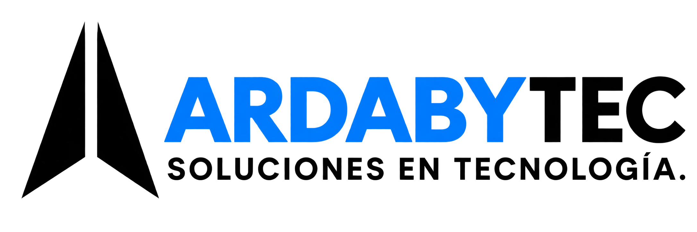
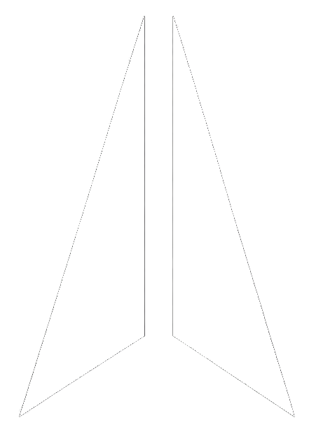

Soluciones que impulsan
Un futuro
más eficiente
Integramos tecnología, talento y estrategia para convertir tus procesos en oportunidades.
Conoce más →
Prueba AGYDA con estas credenciales
Soluciones que impulsan
Integramos tecnología, talento y estrategia para convertir tus procesos en oportunidades.
Conoce más →Tecnología en la que puedes confiar.
Soluciones que crecen contigo.
Tecnología que genera valor.
Integramos tecnología, seguridad y estrategia para resolver hoy los retos de mañana.
Tecnología, soporte y comunicación integrados para que tu operación nunca se detenga.
¿Necesitas una arquitectura o desarrollo específico para tu empresa?
Cotizar Solución Personalizada →
En ARDABYTEC Somos una firma de consultoría especializada en Tecnologías de la Información, con amplia experiencia en soluciones de Contact Center, desarrollo web, aplicaciones móviles y soporte técnico integral.
Impulsamos la transformación digital de nuestros clientes mediante soluciones innovadoras, personalizadas y alineadas con sus objetivos estratégicos. Nuestro enfoque se centra en brindar atención cercana, excelencia operativa y tecnología de alto valor para optimizar procesos, mejorar la experiencia del usuario y acelerar el crecimiento del negocio.
Soporte TI, marcación y software que hacen crecer tu negocio.
Liderar la automatización con IA en soluciones empresariales
Trabajamos con las mejores marcas para ofrecerte soluciones tecnológicas confiables, innovadoras y de alto rendimiento.
Nuestro portafolio
Transformamos desafíos empresariales en soluciones tecnológicas que optimizan procesos, conectan equipos y generan resultados medibles.
Bienvenido de nuevo
Accede con tus credenciales para continuar.
Talento y conocimiento
Explora nuestras vacantes y accede a contenido tecnológico.
Cuéntanos sobre tu proyecto y recibe una propuesta personalizada.
Ir al formulario →